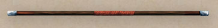
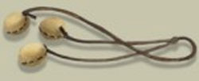
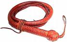
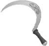
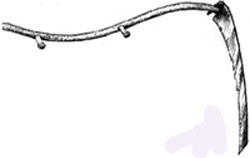

Le armi descritte in questa sezione sono armi meno comuni od esotiche. Ogni arma descritta in questa sezione si considera come arma unica non appartenente a nessun altro gruppo di armi.
Bastone da Guerra

I Bastoni da Guerra sono considerati armi a due mani.

|
TIPO DI ARMA |
FORZA | COSTITUZIONE | DESTREZZA |
| Bastone da Guerra (0.75) | 9 | 9 | 9 |
|
TIPO DI ARMA |
SIZE (PESO) | DANNO | INIZIATIVA |
| Bastone da Guerra | Medium (4 lbs.) | 1d4 (Botta) | +4 |
|
TIPO DI ARMA |
COSTO | PARATA | MATERIALE |
| Bastone da Guerra | 2 g.p. | 2 | Legno |
Bolas

Si tratta di armi da lancio non utilizzabili nel corpo a corpo.
|
TIPO DI ARMA |
FORZA | COSTITUZIONE | DESTREZZA |
| Bolas (1.1) | 7 | 7 | 13 |
|
TIPO DI ARMA |
SIZE (PESO) | DANNO | INIZIATIVA |
| Bolas | Small (1 lb.) | 1d2 (Botta) | +4 |
|
TIPO DI ARMA |
COSTO | PARATA | MATERIALE |
| Bolas | 3 g.p. | 0 | Legno* |
|
TIPO DI ARMA |
RAGGIO CORTO | RAGGIO MEDIO | RAGGIO LUNGO |
| Bolas | 20 metri | 40 metri | 60 metri |
Regole Speciali per le Bolas
Utilizzando le Bolas è possibile utilizzare i seguenti colpi speciali:
Impedimento delle Bolas: Può essere effettuato solo da chi è almeno abile nell'uso delle Bolas. Con tale colpo speciale è possibile provare a far attorcigliare le bolas intorno a una creatura di dimensioni massime Medium in modo tale da impedire alla stessa di muoversi liberamente. Chi utilizza questo colpo speciale riceve una penalità al tiro per colpire di - 2 ed una penalità all'iniziativa di + 1. Se viene colpito, l’avversario, oltre a subire i danni, sarà stato avviluppato dalle bolas e si considererà come se fosse incapacitato. Costo 2 punti combattimento.
Strangolamento delle Bolas: Può essere effettuato solo da chi è almeno campione nell'uso delle Bolas. Con tale colpo speciale è possibile provare a far attorcigliare le bolas intorno al collo di una creatura di dimensioni massime Medium in modo tale da impedire alla stessa di respirare. Chi utilizza questo colpo speciale riceve una penalità al tiro per colpire di - 3 ed una penalità all'iniziativa di + 1 (chi indossa un collare di maglia pesante impone un'ulteriore penalità di -1 al tiro per colpire; chi indossa un elmo completo da cavaliere impone un'ulteriore penalità di -2 al tiro per colpire). Se viene colpito, l’avversario, oltre a subire i danni, sarà stato strangolato dalle bolas e subirà 1d3 danni da strangolamento alla fine di ogni round (ivi compreso il primo). La vittima, inoltre, avrà grossi problemi a parlare avendo il 50% di possibilità di fallire nel lancio di incantesimi che richiedano la componente vocale (o comunque di utilizzare oggetti che richiedano l'utilizzo di formule vocali). Creature senza collo e creature che non necessitano di respirare saranno immuni a questo colpo speciale. Costo 4 punti combattimento.
Indipendentemente dal tipo
di colpo speciale utilizzato
esistono tre modi per liberarsi delle bolas:
Scioglimento: La vittima può provare a scioglierle con un'azione che
richiedere un intero round, al termine del round la vittima dovrà superare un
tiro salvezza contro paralisi
modificato dalla destrezza (senza alcuna penalità per lo stato di
incapacitato dovuto alle medesime bolas), se il tiro ha successo si sarà sciolto
dalle bolas, altrimenti resterà legato. Questo tentativo non causa affaticamento
e può essere ripetuto ogni round.
Rottura: In alternativa, la vittima può
provare a rompere le bolas con la forza in un'azione della durata di un intero
round, in questo caso dovrà superare un tiro di piegare i
ferri dolci con un bonus del +5% subendo 1 punto fatica; se il
tiro ha successo la vittima si sarà liberata e le bolas saranno definitivamente
rotte, altrimenti resterà legato. Questo tentativo può essere ripetuto ogni
round.
Taglio:
Infine, la vittima può provare a tagliare le bolas effettuando un tiro per
colpire contro AC 5 e provocando almeno un danno da taglio. Si considera un vero
e proprio attacco che impiega, però, un intero round. Le migliori armi da taglio
per effettuare questo tentativo sono quelle di dimensioni small. L'uso di armi
da taglio medium impone una penalità di -2 al tiro per colpire, con armi large
non è possibile effettuare questo tentativo.
Frusta da Guerra

|
TIPO DI ARMA |
FORZA | COSTITUZIONE | DESTREZZA |
| Frusta da Guerra (1.2) | 8 / 9 | 8 / 8 | 13 / 13 |
|
TIPO DI ARMA |
SIZE (PESO) | DANNO | INIZIATIVA |
| Frusta da Guerra | Medium (2,5 lbs.) / Large (5 lbs.) | 1d3 (Taglio) / 1d4 (Taglio) | +3 / +5 |
|
TIPO DI ARMA |
COSTO | PARATA | MATERIALE |
| Frusta da Guerra | 5 g.p. / 10 g.p. | 0 | Legno* |
|
|
|
Sickle

|
TIPO DI ARMA |
FORZA | COSTITUZIONE | DESTREZZA |
| Sickle (0.9) | 9 | 8 | 13 |
|
TIPO DI ARMA |
SIZE (PESO) | DANNO | INIZIATIVA |
| Sickle | Small (3 lbs.) | 1d4+1 (Taglio) | +3 |
|
TIPO DI ARMA |
COSTO | PARATA | MATERIALE |
| Sickle | 7 g.p. | 1 | Metallo |
War Scythe
Il Falcione da Guerra è un'arma a due mani.

|
TIPO DI ARMA |
FORZA | COSTITUZIONE | DESTREZZA |
| War Scythe (1.20) | 15 | 11 | 11 |
|
TIPO DI ARMA |
SIZE (PESO) | DANNO | INIZIATIVA |
| War Scythe | Large (9 lbs.) | 1d6+1d4 (Taglio) | +10 |
|
TIPO DI ARMA |
COSTO | PARATA | MATERIALE |
| War Scythe | 22 g.p. | 1 | Metallo |
Regole Speciali per il War Scythe
Il costo base del colpo speciale "Fendente Frontale" sarà pari a 5 punti combattimento.
Il colpo di combattimento
speciale "Fendente Frontale" può essere
utilizzato per colpire fino a tre creature che si trovino tutte adiacenti e
posizionate nelle tre posizioni frontali di attacco. Quando viene effettuato
tale attacco si otterrà
una